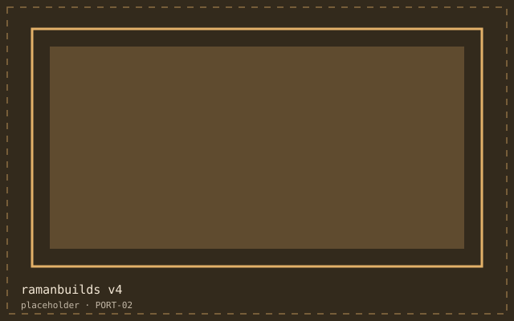

What it is
The fourth version of this site, and the first one I have not rewritten within a year.
The problem
Versions one to three were built on whatever framework I was learning. Each one stopped building within eighteen months. I wanted a site that would still open, and still be editable, in a decade.
How I built it
- One stylesheet, one script, no dependencies at runtime and none at build time.
- A performance budget written into the README: under 150 KB per page, under 1s to interactive on a throttled connection.
- Accessibility rules fixed before layout: focus colour, target size, heading order, live regions for anything that changes.
- Content as hand-written HTML, so the file I edit is the file the browser receives.
What it looks like
Where it got to
- Every page under budget; the heaviest is the archive at 96 KB.
- No dependency has broken it, because there are none.
- Editing a page takes seconds, which means it actually gets updated.
What I would do differently
A build step is a maintenance contract
Every tool in the chain is something to upgrade later. For a personal site that cost outweighs the convenience.
Write the budget down
An unwritten budget is an intention. A written one is a decision you can be held to.
Repetition is cheaper than abstraction here
The header is copied into every page. A find-and-replace once a year is less work than a template system forever.